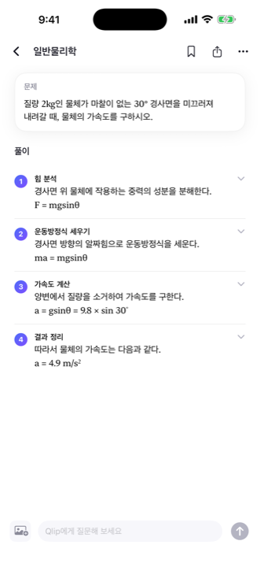
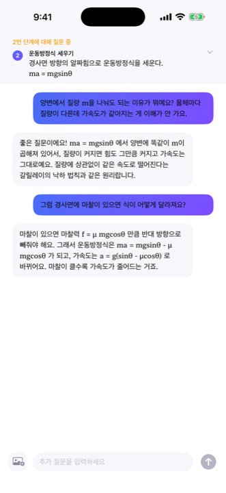
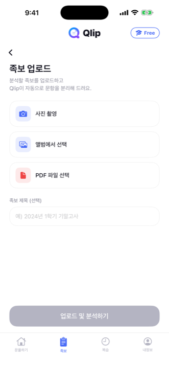
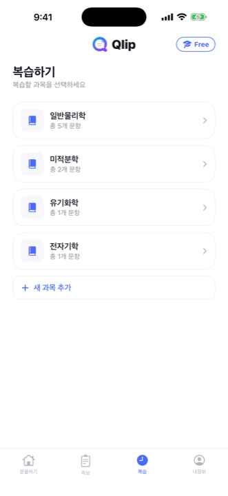

수학, 물리, 화학… 막히는 문제를 카메라로 찍기만 하면 Qlip이 단계별로 풀이를 만들어요. 이해가 안 되는 부분은 그 단계를 짚어서, 몇 번이고 다시 물어볼 수 있어요.

문제를 카메라로 찍기만 하면 돼요. 손글씨 풀이도, 인쇄된 문제도 그대로 인식해요.
Qlip이 문제를 분석하고, 개념과 수식을 포함한 단계별 풀이를 만들어요.
이해가 안 되는 단계를 짚어서 바로 질문하세요. 이해될 때까지 계속 물어볼 수 있어요.
과목별로 저장하고, 족보를 올리면 문항 단위로 자동 분리해서 언제든 복습해요.
전체 문제를 다시 설명할 필요 없어요. 풀이의 특정 단계를 선택하면, Qlip은 그 단계의 맥락을 그대로 기억한 채로 답해요.
선택한 단계의 수식과 개념을 기억한 채로 대화가 이어져요.
한 번의 질문으로 끝나지 않아요. 이해될 때까지 계속 물어볼 수 있어요.
기존 풀이에서 오류가 발견되면 Qlip이 먼저 알려주고 다시 검증해요.
수식과 개념을 함께 담은 풀이를 단계마다 확인할 수 있어요.
이해가 안 되는 단계를 짚어서 메신저처럼 바로 물어보세요.

족보 사진 한 장이면, 문항 단위로 자동 분리해서 정리해요.

풀었던 문제를 과목별로 모아 언제든 다시 복습할 수 있어요.

AI가 만든 풀이는 실수할 수 있어요. Qlip은 그 사실을 숨기지 않아요 — 풀이를 만들 때마다 스스로 검증하고, 이상이 발견되면 화면에 명확히 알려드려요.
풀이마다 검증 단계를 거쳐요. Qlip이 스스로 풀이를 다시 확인한 뒤에 보여드려요.
오류는 숨기지 않아요. 후속 질문 중 오류가 발견되면 즉시 안내하고 재검증해요.
내 콘텐츠는 내 것이에요. 광고 목적으로 데이터를 이용하지 않아요.
iCloud로 안전하게 동기화. 별도 서버 없이 내 계정의 iCloud에만 저장돼요.